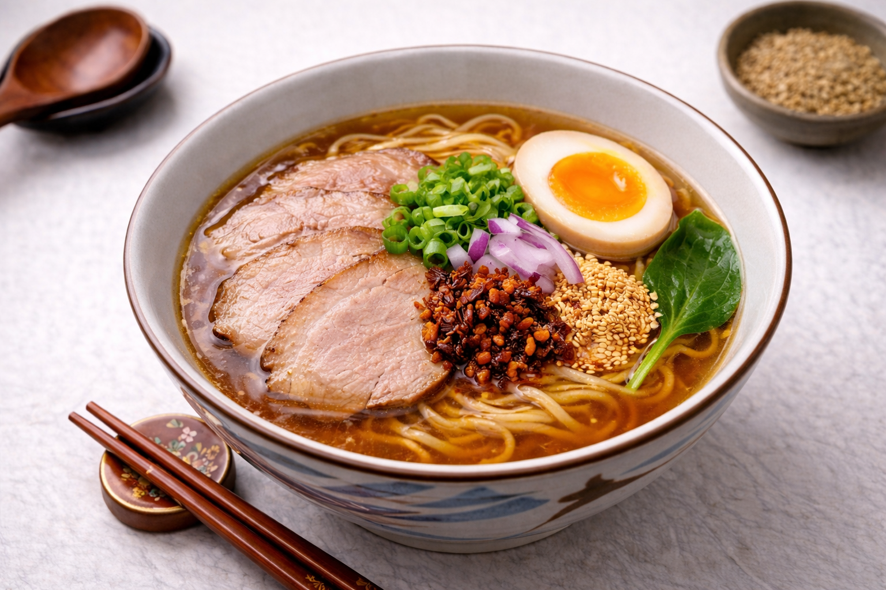

Shoyu Ramen
Ingredients
Soup, sauce & topping: Chicken, kombu (Japanese kelp), apple, onion, garlic, soy sauce, tuna flakes, seashell, apple vinegar, pork broth, marinated pork, egg, green onion, red onion and sesame
← Back to Menu
Soup, sauce & topping: Chicken, kombu (Japanese kelp), apple, onion, garlic, soy sauce, tuna flakes, seashell, apple vinegar, pork broth, marinated pork, egg, green onion, red onion and sesame
← Back to Menu